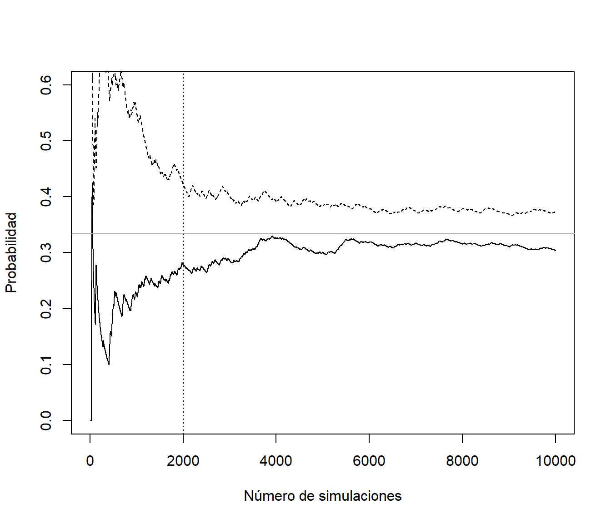

4.5 El problema de la dependencia
En el caso de dependencia, la estimación de la precisión se complica: \[Var\left( \overline{X}\right) =\frac{1}{n^{2}}\left( \sum_{i=1}^{n}Var\left( X_{i} \right) + 2\sum_{i<j}Cov\left( X_{i},X_{j}\right) \right).\]
Supongamos que en A Coruña llueve de media 1/3 días al año, y que la probabilidad de que un día llueva solo depende de lo que ocurrió el día anterior, siendo 0.94 si el día anterior llovió y 0.03 si no. Podemos generar valores de la variable indicadora de día lluvioso con el siguiente código:
# Variable dicotómica 0/1 (FALSE/TRUE)
set.seed(1)
nsim <- 10000
alpha <- 0.03 # prob de cambio si seco
beta <- 0.06 # prob de cambio si lluvia
rx <- logical(nsim) # x == "llueve"
rx[1] <- FALSE # El primer día no llueve
for (i in 2:nsim)
rx[i] <- if (rx[i-1]) runif(1) > beta else runif(1) < alphaSe podría pensar en emplear las expresiones anteriores:
n <- 1:nsim
est <- cumsum(rx)/n
esterr <- sqrt(est*(1-est)/(n-1)) # OJO! Supone independencia
plot(est, type="l", lwd=2, ylab="Probabilidad",
xlab="Número de simulaciones", ylim=c(0,0.6))
abline(h = est[nsim], lty=2)
lines(est + 2*esterr, lty=2)
lines(est - 2*esterr, lty=2)
abline(h = 1/3, col="darkgray") # Prob. teor. cadenas Markov
Figura 4.5: Gráfico de convergencia incluyendo el error de la aproximación (calculado asumiendo independencia).
La aproximación de la proporción sería correcta (es consistente):
est[nsim]## [1] 0.3038Sin embargo, al ser datos dependientes esta aproximación del error estandar no es adecuada:
esterr[nsim]## [1] 0.004599203En este caso al haber dependencia positiva se produce una subestimación del verdadero error estandar.
acf(as.numeric(rx))Figura 4.6: Correlograma de la secuencia indicadora de días de lluvia.
El gráfico de autocorrelaciones sugiere que si tomamos 1 de cada 25 podemos suponer independencia.
lag <- 24
xlag <- c(rep(FALSE, lag), TRUE)
rxi <- rx[xlag]
acf(as.numeric(rxi))Figura 4.7: Correlograma de la subsecuencia de días de lluvia obtenida seleccionando uno de cada 25 valores.
nrxi <- length(rxi)
n <- 1:nrxi
est <- cumsum(rxi)/n
esterr <- sqrt(est*(1-est)/(n-1))
plot(est, type="l", lwd=2, ylab="Probabilidad",
xlab=paste("Número de simulaciones /", lag + 1), ylim=c(0,0.6))
abline(h = est[length(rxi)], lty=2)
lines(est + 2*esterr, lty=2) # Supone independencia
lines(est - 2*esterr, lty=2)
abline(h = 1/3, col="darkgray") # Prob. teor. cadenas MarkovFigura 4.8: Gráfico de convergencia de la aproximación de la probabilidad a partir de la subsecuencia de días de lluvia (calculando el error de aproximación asumiendo independencia).
Esta forma de proceder podría ser adecuada para tratar de aproximar la precisión:
esterr[nrxi]## [1] 0.02277402pero no sería eficiente para aproximar la media. Siempre será preferible emplear todas las observaciones.
Por ejemplo, se podría pensar en considerar las medias de grupos de 24 valores consecutivos y suponer que hay independencia entre ellas:
rxm <- rowMeans(matrix(rx, ncol = lag, byrow = TRUE))
nrxm <- length(rxm)
n <- 1:nrxm
est <- cumsum(rxm)/n
esterr <- sqrt(cumsum((rxm-est)^2))/n # Error estándar
plot(est, type="l", lwd=2, ylab="Probabilidad",
xlab=paste("Número de simulaciones /", lag + 1), ylim=c(0,0.6))
abline(h = est[length(rxm)], lty=2)
lines(est + 2*esterr, lty=2) # OJO! Supone independencia
lines(est - 2*esterr, lty=2)
abline(h = 1/3, col="darkgray") # Prob. teor. cadenas MarkovFigura 4.9: Gráfico de convergencia de las medias por lotes.
Esta es la idea del método de medias por lotes (batch means; macro-micro replicaciones) para la estimación de la varianza. En el ejemplo anterior se calcula el error estándar de la aproximación por simulación de la proporción:
esterr[nrxm]## [1] 0.01569017pero si el objetivo es la aproximación de la varianza (de la variable y no de las medias por lotes), habrá que reescalarlo adecuadamente. Supongamos que la correlación entre \(X_i\) y \(X_{i+k}\) es aproximadamente nula, y consideramos las subsecuencias (lotes) \((X_{t+1},X_{t+2},\ldots,X_{t+k})\) con \(t=(j-1)k\), \(j=1,\ldots,m\) y \(n = mk\). Entonces:
\[\begin{aligned} Var \left(\bar X \right) &= Var \left(\frac{1}{n} \sum_{i=1}^n X_i\right) = Var \left( \frac{1}{m}\sum_{j=1}^m \left(\frac{1}{k} \sum_{t=(i-1)k + 1}^{ik} X_t\right) \right) \\ &\approx \frac{1}{m^2} \sum_{j=1}^m Var \left(\frac{1}{k} \sum_{t=(i-1)k + 1}^{ik} X_t\right) \approx \frac{1}{m} Var \left(\bar{X}_k \right) \end{aligned}\] donde \(\bar{X}_k\) es la media de una subsecuencia de longitud \(k\).
var.aprox <- nsim * esterr[length(rxm)]^2
var.aprox## [1] 2.461814Obtenida asumiendo independencia entre las medias por lotes, y que será una mejor aproximación que asumir independencia entre las generaciones de la variable:
var(rx)## [1] 0.2115267Alternativamente se podría recurrir a la generación de múltiples secuencias independientes entre sí:
# Variable dicotómica 0/1 (FALSE/TRUE)
set.seed(1)
nsim <- 1000
nsec <- 10
alpha <- 0.03 # prob de cambio si seco
beta <- 0.06 # prob de cambio si lluvia
rxm <- matrix(FALSE, nrow = nsec, ncol= nsim)
for (i in 1:nsec) {
# rxm[i, 1] <- FALSE # El primer día no llueve
# rxm[i, 1] <- runif(1) < 1/2 # El primer día llueve con probabilidad 1/2
rxm[i, 1] <- runif(1) < 1/3 # El primer día llueve con probabilidad 1/3 (ideal)
for (j in 2:nsim)
rxm[i, j] <- if (rxm[i, j-1]) runif(1) > beta else runif(1) < alpha
}La idea sería considerar las medias de las series como una muestra independiente de una nueva variable y estimar su varianza de la forma habitual:
# Media de cada secuencia
n <- 1:nsim
est <- apply(rxm, 1, function(x) cumsum(x)/n)
matplot(n, est, type = 'l', lty = 3, col = "lightgray",
ylab="Probabilidad", xlab="Número de simulaciones")
# Aproximación
mest <- apply(est, 1, mean)
lines(mest, lwd = 2)
abline(h = mest[nsim], lty = 2)
# Precisión
mesterr <- apply(est, 1, sd)/sqrt(nsec)
lines(mest + 2*mesterr, lty = 2)
lines(mest - 2*mesterr, lty = 2)
# Prob. teor. cadenas Markov
abline(h = 1/3, col="darkgray") Figura 4.10: Gráfico de convergencia de la media de 10 secuencias generadas de forma independiente.
# Aproximación final
mest[nsim] # mean(rxm)## [1] 0.3089# Error estándar
mesterr[nsim]## [1] 0.02403491Trataremos este tipo de problemas en la diagnosis de algoritmos de simulación Monte Carlo de Cadenas de Markov (MCMC). Aparecen también en la simulación dinámica (por eventos o cuantos).
4.5.1 Periodo de calentamiento
En el caso de simulación de datos dependientes (simulación dinámica) pueden aparecer problemas de estabilización. Puede ocurrir que el sistema evolucione lentamente en el tiempo hasta alcanzar su distribución estacionaria, siendo muy sensible a las condiciones iniciales con las que se comienzó la simulación. En tal caso resulta conveniente ignorar los resultados obtenidos durante un cierto período inicial de tiempo (denominado período de calentamiento o estabilización), cuyo único objeto es conseguir que se estabilice la distribución de probabilidad.
Como ejemplo comparamos la simulación del Ejemplo 4.3 con la obtenida considerando como punto de partida un día lluvioso (con una semilla distinta para evitar dependencia).
set.seed(2)
nsim <- 10000
rx2 <- logical(nsim)
rx2[1] <- TRUE # El primer día llueve
for (i in 2:nsim)
rx2[i] <- if (rx2[i-1]) runif(1) > beta else runif(1) < alpha
n <- 1:nsim
est <- cumsum(rx)/n
est2 <- cumsum(rx2)/n
plot(est, type="l", ylab="Probabilidad",
xlab="Número de simulaciones", ylim=c(0,0.6))
lines(est2, lty = 2)
# Ejemplo periodo calentamiento nburn = 2000
abline(v = 2000, lty = 3)
# Prob. teor. cadenas Markov
abline(h = 1/3, col="darkgray") 
En estos casos puede ser recomendable ignorar los primeros valores generados (por ejemplo los primeros 2000) y recalcular los estadísticos deseados.
También trataremos este tipo de problemas en la diagnosis de algoritmos MCMC.
\[X_t = \mu + \rho * (X_{t-1} - \mu) + \varepsilon_t\] Podemos tener en cuenta que en este caso la varianza es: \[\textrm{var}(X_t)=\operatorname{E}(X_t^2)-\mu^2=\frac{\sigma_\varepsilon^2}{1-\rho^2}.\]
Establecemos los parámetros:
nsim <- 200 # Numero de simulaciones
xmed <- 0 # Media
rho <- 0.5 # Coeficiente AR
nburn <- 10 # Periodo de calentamiento (burn-in)Se podría fijar la varianza del error:
evar <- 1
# Varianza de la respuesta
xvar <- evar / (1 - rho^2)pero la recomendación sería fijar la varianza de la respuesta:
xvar <- 1
# Varianza del error
evar <- xvar*(1 - rho^2)Para simular la serie, al ser un \(AR(1)\), normalmente simularíamos el primer valor
rx[1] <- rnorm(1, mean = xmed, sd = sqrt(xvar))o lo fijamos a la media (en este caso nos alejamos un poco de la distribución estacionaria, para que el “periodo de calentamiento” sea mayor). Después generamos los siguientes valores de forma recursiva:
set.seed(1)
x <- numeric(nsim + nburn)
# Establecer el primer valor
x[1] <- -10
# Simular el resto de la secuencia
for (i in 2:length(x))
x[i] <- xmed + rho*(x[i-1] - xmed) + rnorm(1, sd=sqrt(evar))
x <- as.ts(x)
plot(x)
abline(v = nburn, lty = 2)
Figura 4.11: Ejemplo de una simulación de una serie de tiempo autorregresiva.
y eliminamos el periodo de calentamiento:
rx <- x[-seq_len(nburn)]Para simular una serie de tiempo en R
se puede emplear la función arima.sim del paquete base stats.
En este caso el periodo de calentamiento se establece mediante el
parámetro n.start (que se fija automáticamente a un valor adecuado).
Por ejemplo, podemos generar este serie autoregressiva con:
rx2 <- arima.sim(list(order = c(1,0,0), ar = rho), n = nsim, n.start = nburn, sd = sqrt(evar))La recomendación es fijar la varianza de las series simuladas si se quieren comparar resultados considerando distintos parámetros de dependencia.